Включение веб-камеры
В этом уроке я покажу, как включить камеру на ноутбуке. Мы научимся ее запускать и использовать, решать возникающие проблемы.
Как включить камеру на ноутбуке
Приложение «Камера» (Windows 10, 8)
В Windows 10 есть приложение, через которое можно проверить работу веб-камеры, а также сделать при помощи неё фото и записать видео.
1. Прямо в открытом меню Пуск напечатайте "камера" и запустите приложение.
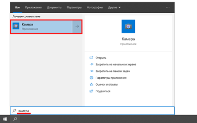2. Если устройство активно, то в верхней части ноутбука загорится индикатор, и программа покажет изображение. Справа будет иконка фотоаппарата и видеокамеры.
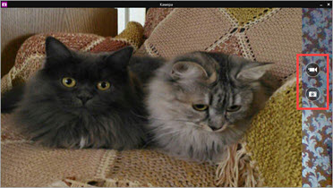Щелкнув по значку, приложение автоматически сделает снимок или запустит запись видео. Все записанные файлы можно найти в папке Компьютер - Изображения - Пленка.
Skype
Официальный сайт: skype.com
1. Для включения камеры в скайпе войдите в меню (три точки) и откройте «Настройки».
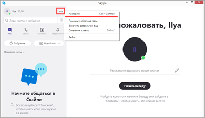2. Перейдите на вкладку «Звук и видео». Убедитесь, что выбрано правильное устройство. Если оно указано верно, на фоне автоматически появится картинка.
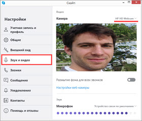Media Player Classic
Официальный сайт: mpc-hc.org/downloads
Media Player Classic – это бесплатный проигрыватель видео и аудио файлов. Часто эта программа уже установлена на компьютере, так как входит в пакет кодеков «K-Lite Codec Pack». Работает на любой версии Windows (XP, 7, 8, 10).
1. Щелкните по меню «Файл» и выберите пункт «Открыть Устройство».
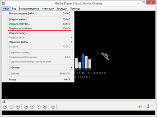2. Активируется вебка и запустится прямой эфир, который можно записать, нажав на «Запись».
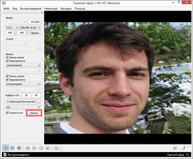По умолчанию файлы сохраняются в папке «Документы».
MyCam
Официальный сайт: e2esoft.com/mycam
Бесплатная программа для включения и использования камеры - записи фото и видео:
- Работает с любыми устройствами.
- Проста в использовании.
- Имеет фотофильтры и видеоэффекты.
Для начала работы перейдите во вкладку «Media» и нажмите «Open camera».
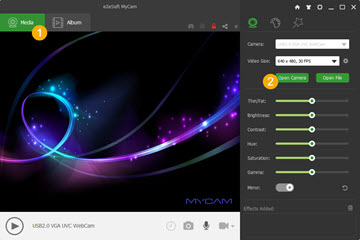ManyCam
Официальный сайт: manycam.com
ManyCam используется для наложения различных спецэффектов на изображение в режиме онлайн. Вебка может не отобразится в программе, если вы её случайно удалили или переустановили драйвер. Рассмотрим, как это исправить.
1. В панели «Video Sources» щелкните по значку +.
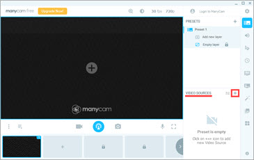2. В новом меню выберите «WebCam».
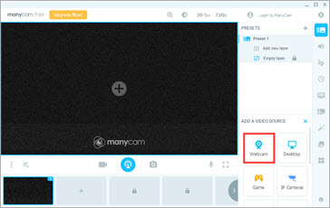3. Кликните по устройству, найденному в списке.
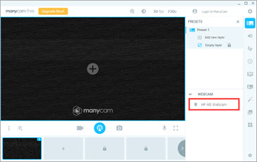Перезагрузите программу и изображение должно появится.
Как включить камеру в браузере
Если вы случайно закрыли доступ к видео захвату или установили жесткие настройки безопасности, вебка в браузере может не задействоваться. В этом разделе рассмотрим основные настройки, где это можно исправить.
Google Chrome
1. Откройте меню (три точки) и перейдите в «Настройки».
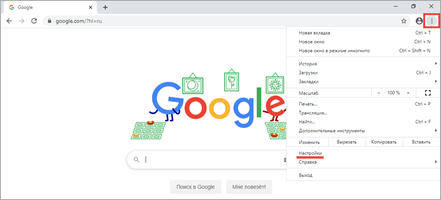2. Щелкните по разделу «Конфиденциальность и безопасность» и выберите «Настройки сайта».
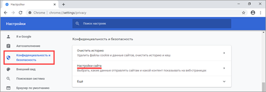3. В разрешениях кликните по пункту «Камера».
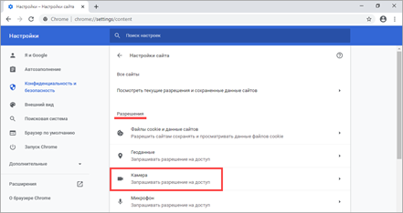4. Убедитесь, что переключатель установлен в «Спрашивать разрешение на доступ».
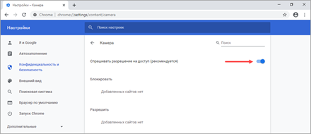Если вы случайно запретили доступ, его всегда можно удалить в настройках сайта.
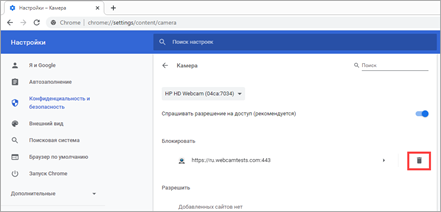На заметку. Для проверки работы устройства перейдите на сайт webcamtests.com, разрешите доступ и проверьте наличие изображения.
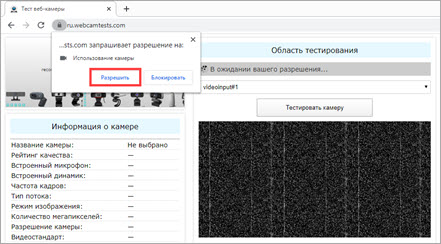Mozilla Firefox
1. Войдите в меню (три пунктира) и откройте «Настройки».
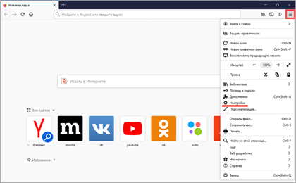2. Выберите раздел «Приватность и защита». Прокрутите панель настроек немного вниз, в разрешениях нажмите на кнопку «Параметры» напротив значка камеры.
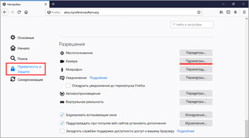3. В следующем окне будет показано, какие сайты запрашивали доступ.
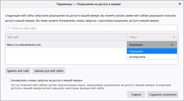Вы можете изменить или удалить настройки разрешений, кликнув по конкретному сайту.
Если камера не работает
Если при включении вебки на ноутбуке нет изображения, возможно, устройство не активно. Задействовать его можно одним из трех способов.
Способ 1: комбинация клавиш
На некоторых ноутбуках есть специальная клавиша на клавиатуре, которая включает и выключает веб-камеру. Она находится в самом верхнем ряду, на одной из функциональных кнопок (F1-F12). Чтобы ее активировать, нужно нажать на эту клавишу вместе с Fn.
Такая кнопка встречается у производителей Asus, HP, Lenovo, Samsung. На некоторых моделях используется сочетание Fn + V.
В некоторых случаях для того чтобы вебка активировалась, на компьютере должна быть установлена специальная программа управления клавишами. Скачать ее можно на сайте производителя, выбрав свою модель компьютера. Также рекомендую загрузить инструкцию, в которой будут указаны точные клавиши для активации.
Способ 2: активация в Диспетчере устройств
Если не получилось включить вебку клавишами и нет времени разбираться с настройками, можно перейти в Диспетчер устройств и задействовать её там.
1. Щелкните правой кнопкой мыши по Пуск, в контекстном меню выберите «Управление компьютером».
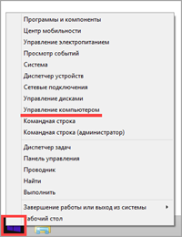2. Перейдите в «Диспетчер устройств», разверните ветку «Устройство обработки изображений». Щелкните по устройству правой кнопкой мыши и выберите пункт «Задействовать».
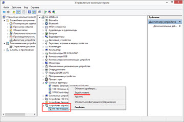Способ 3: активация в BIOS
В Диспетчере может не отобразиться устройство захвата изображения. Такое бывает, если вебка принудительна отключена в BIOS.
- При включении ноутбука нажмите клавишу F2. На некоторых моделях клавиша может отличаться.
- В меню биос найдите раздел «Advanced». В нём перейдите в «System Configuration».
- Найдите параметр «Onboard Camera» и убедитесь, что установлено «Enabled».
Другие причины
Если камера всё равно не включается, значит, в системе есть ошибки. Рассмотрим, как их устранить.
Не установлен драйвер
Без драйвера компьютер не сможет опознать устройство и правильно с ним работать. Для проверки щелкните правой кнопкой мыши по Пуск и выберите «Управление компьютером».
Если всё в порядке, в Диспетчере будет пункт «Камеры». Нажав на него, появится описание устройства.
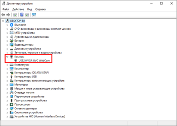А если вместо этого пункта будет иконка с вопросительным знаком, значит, нужно загрузить и установить драйвер.
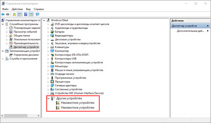Для этого зайдите на официальный сайт производителя, выберите свою модель ноутбука, скачайте драйвер для вебки и установите его.
Антивирус блокирует доступ
Некоторые антивирусы в целях безопасности могут принудительно заблокировать доступ к устройству. Из-за такой блокировки приложения и сервисы не смогут включить вебку. Рассмотрим, как настраивается защита на примере антивирусной системы Eset Internet Security.
1. В главной панели программы перейдите в «Настройка». Щелкните по значку «Дополнительные настройки».
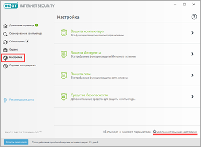2. Перейдите в раздел «Контроль устройств», справа разверните вкладку «Защита веб камеры».
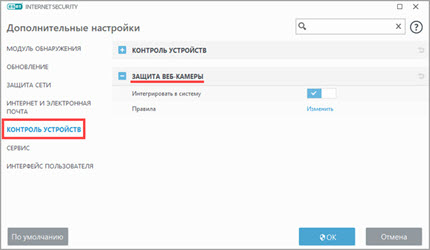3. Можно полностью выключить защиту, сняв переключатель «Интегрировать в систему». Или назначить разрешающие правила для доступа к приложениям.
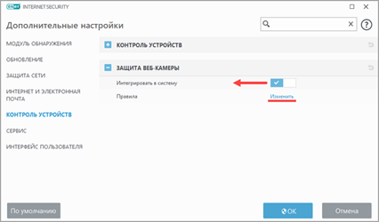Не активна служба разделения доступа
По умолчанию если какой-нибудь сервис задействует вебку, то система может запретить к ней доступ другим программам. Для разделения доступа нужно активировать специальную службу.
1. В меню Пуск напечатайте службы и запустите приложение.
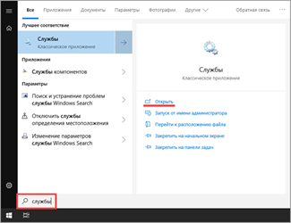2. Найдите в списке пункт «Сервер кадров камеры Windows» и дважды по нему щелкните.
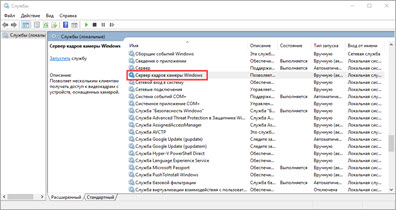3. Нажмите кнопку «Запустить».
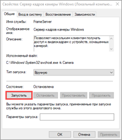Перезагрузите компьютер. Если не помогло, постарайтесь найти процесс или службу, которые используют камеру.
Физическая неисправность
Если ни один из советов не помог, скорее всего, устройство неисправно. Можно, конечно, попробовать переустановить Windows, чтобы убедиться наверняка. Если не поможет, обратиться в сервисный центр. Или приобрести внешнюю USB вебку.